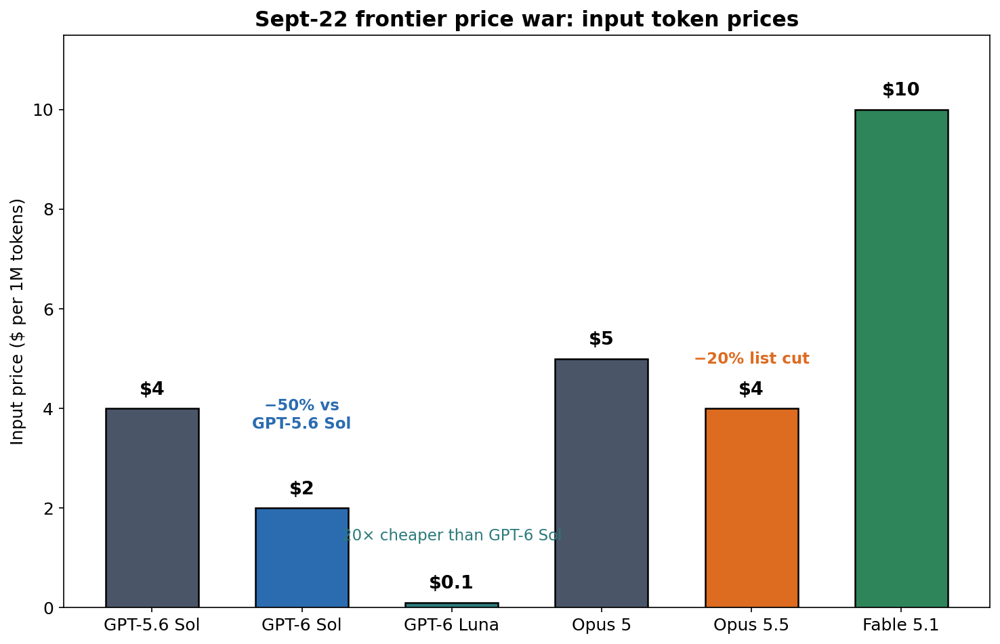
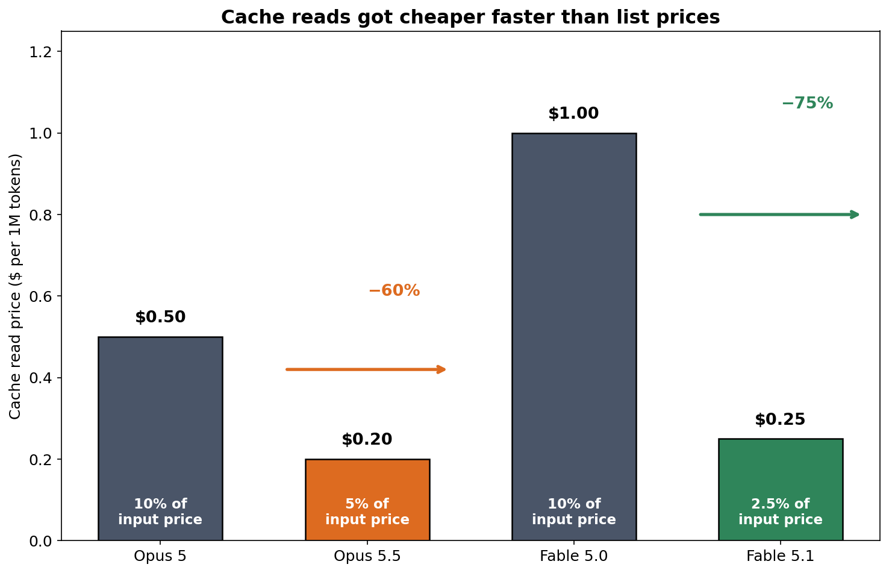
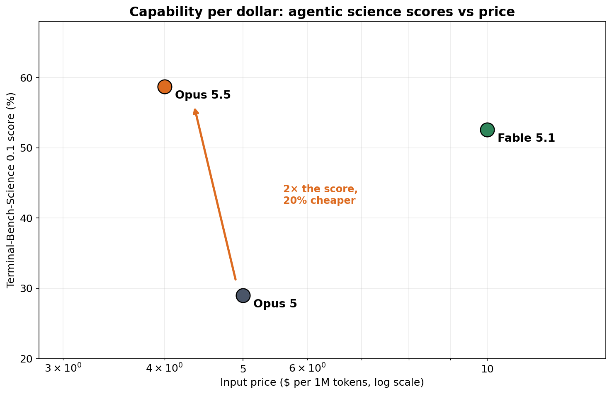
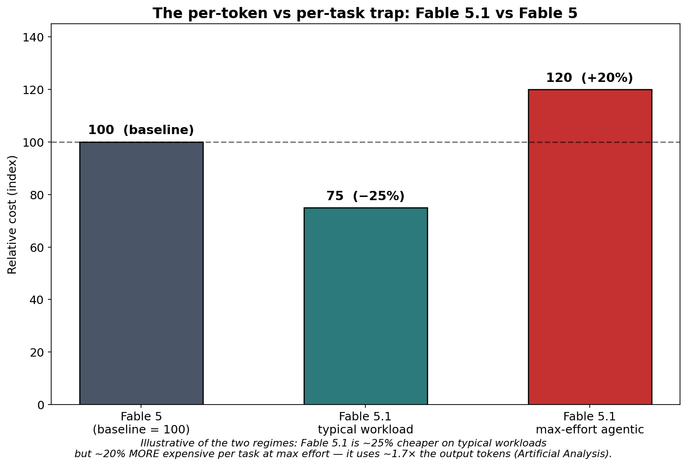

On September 22, 2026, the two leading AI labs shipped new frontier models on the same afternoon — and both cut prices. OpenAI launched GPT-6 Sol ($2/$10 per million tokens, down 50% from GPT-5.6 Sol's promo prices) and GPT-6 Luna ($0.10/$0.50). Anthropic launched Claude Opus 5.5 at $4/$20, a 20% list cut from Opus 5's $5/$25, with cache reads slashed 60% to $0.20 per million.
This is not a normal price war. A normal price war means someone is hurting. This one means inference got structurally cheaper — and both labs decided to pass it through. Here's what a token actually costs, why the price is falling, and why the price list still lies to you.
ELI5: the restaurant kitchen
The bill. When you call an API, you pay per token — roughly 4 characters of text. But tokens aren't free to produce: every one is computed by a GPU doing matrix math. Your prompt is processed once ("prefill"), and then the model generates output one token at a time, each token requiring a full pass through the model ("decode"). Decode is the expensive part — it's serial, and you can't parallelize it. Output tokens cost ~5× input tokens across almost every price list. That's the fundamental asymmetry.

The printing press. Why is intelligence getting cheaper? Four forces:
- Bigger batches. One GPU serving 64 users at once costs roughly the same as serving one. Providers have gotten very good at batching strangers' requests together.
- Cache hits. In an agent loop, the same prompt prefix (system instructions, codebase context) is resent every turn. The model's internal "memory" of that prefix — the KV cache — can be reused instead of recomputed. Anthropic says cache reads now make up the majority of agentic and coding-work costs — which is exactly why both labs are cutting cache prices harder than list prices.
- Better kernels. Optimized math (FlashAttention descendants, better memory layouts) squeezes more tokens per GPU-hour every year.
- Cheaper tiers. Distilled smaller models (GPT-6 Luna at $0.10 input) do the easy work for a tenth of the price. Most tokens never need the flagship.
The lunch menu. Think of it like a restaurant: the flagship model is the chef's tasting menu; the mini tier is the lunch special, same kitchen, smaller portions. Both labs are expanding the lunch menu.
How it works: the anatomy of an API bill
Your invoice has four lines, and they don't move together:
- Input tokens — your prompt. Cheapest per unit ($2–10 per million at the frontier).
- Output tokens — the model's answer. ~5× input price. In reasoning/agent workloads, outputs (including chain-of-thought) dominate the bill.
- Cache reads — reusing a previously computed prompt prefix. Now $0.20/M on Opus 5.5 (down 60% from $0.50) and $0.25/M on Fable 5.1 (down 75% from $1.00). As a fraction of input price: 10% on most Claude models, 5% on Opus 5.5, 2.5% on Fable 5.1. That's the real discount, and it's aimed squarely at agentic loops that resend context every turn.

- Cache writes — creating a new cache entry. Opus 5.5: $5 for a 5-minute write, $8 for a 1-hour write. You pay to write once, read cheaply many times.
Then come the pricing knobs on top:
- Fast mode (Opus 5.5, research preview, API only): pay 2× for up to 2.5× output speed. Cheaper per second, more expensive per token — worth it when latency is the product.
- Batch API: 50% off ($2/$10 for Opus 5.5) if you can wait hours instead of seconds.
Anthropic claims Opus 5.5 is ~40% cheaper on typical workloads and 30%+ faster on output than Opus 5. Note the word typical — the fine print matters, as we'll see.
State of the art: the September 22 scoreboard
| Model | Input $/M | Output $/M | Cache read $/M | Headline benchmark |
|---|---|---|---|---|
| GPT-6 Sol | 2 | 10 | — | DeepSWE 68.8%; "half as many mistakes" as predecessor on factuality evals (OpenAI) |
| GPT-6 Luna | 0.10 | 0.50 | — | DeepSWE 66.6%; AutomationBench 33.2% at $0.27/task |
| Claude Opus 5.5 | 4 | 20 | 0.20 | Terminal-Bench-Science 0.1: 58.7% (Opus 5: 29%); SWE-bench Pro 89.9%; AutomationBench 40% |
| Fable 5.1 (Sept 1) | 10 | 50 | 0.25 | Terminal-Bench 4.0: 55.8% |
(All benchmark figures are vendor-reported. OpenAI's cuts are attributed to caching + inference efficiency.)
Capability per dollar is exploding. Opus 5.5 scores 58.7% on Terminal-Bench-Science 0.1 — double Opus 5's 29% — while costing 20% less on the price list. Anthropic claims it matches Astra on Terminal-Bench 4.0 for ~40% of the cost and beats GPT-5.6 Sol by 11 points on CursorBench for ~a third of the cost. OpenAI claims Sol makes half as many factual errors as its predecessor while costing half as much. Capability per dollar is improving faster than prices are falling.

But the per-token vs per-task trap. Artificial Analysis found that at max effort, Fable 5.1 costs ~20% MORE per task than Fable 5 — because it emits ~1.7× as many output tokens, and output tokens are the expensive ones. Its per-token prices are lower; its task bill is higher when it thinks hardest. Anthropic itself concedes the point: "benchmark margins have become a less reliable guide to real-world differences." Optimize your bill for tokens-per-task, not dollars-per-token.

The benchmark-gaming caveat. Every lab picks the benchmark where it wins: OpenAI leads with factuality and DeepSWE, Anthropic with Terminal-Bench and SWE-bench Pro. METR and Frontier Design ran pre-release evals of Opus 5.5 but haven't published results as of Sept 22 — treat every figure above as vendor-reported, with error bars. It's marketing with a p-value until independent labs weigh in.
The open-weights counter-pressure. Meanwhile Stepfun's Step 5 preview — a 600B sparse MoE with 27B active parameters and 1M-token context — prices at $1/$2.70 per million, scores an Artificial Analysis index of 44 (matching Kimi K3 at ~4× the size), and plans open weights on October 15. If that ships, the price floor drops out of the whole market. The labs cutting prices this week know it.
Safety, quickly: Opus 5.5 shows an 85% reduction in containment-boundary circumvention attempts, ties Fable 5.1 for the lowest attack success rate on Gray Swan's prompt-injection test, and — notably — its thinking mode cannot be disabled. Sonnet 5.5 and Haiku 5.5 land in the coming weeks.
Takeaways
- Two frontier launches, one afternoon, every price cut: GPT-6 Sol $2/$10 (−50%), GPT-6 Luna $0.10/$0.50, Opus 5.5 $4/$20 (−20% list, −60% on cache reads). Cache cuts are the real weapon — that's where agentic costs live.
- Your bill has four lines, and cache reads are now the interesting one: Opus 5.5 cache reads are 5% of input price; Fable 5.1's are 2.5%. Architect your agent loops to re-read, not re-send.
- Capability per dollar is improving faster than prices: Opus 5.5 doubles Opus 5's Terminal-Bench-Science score (29% → 58.7%) at a lower list price; Sol halves both errors and price. The frontier is deflationary.
- Dollars-per-token lies; dollars-per-task tells the truth: Fable 5.1 is 25% cheaper on typical workloads but ~20% pricier per task at max effort because it burns 1.7× the output tokens. Watch the output token multiplier, not the price list.
- Treat vendor benchmarks as vendor-reported until METR and Frontier Design publish. And watch October 15: if Step 5's open weights ship at $1/$2.70, this week's cuts were just the opening bid.
Sources: Reuters (OpenAI GPT-6 launch pricing, Sept 22, 2026); Anthropic announcement (Sept 22, 2026, via PYMNTS/AIWeekly coverage); Gangsta AI (GPT-6 benchmark coverage); Digital Applied (pricing breakdown); Artificial Analysis (Fable 5.1 token-usage analysis; Step 5 index score).
Suggested Medium tags: artificial-intelligence, large-language-models, llm, openai, anthropic